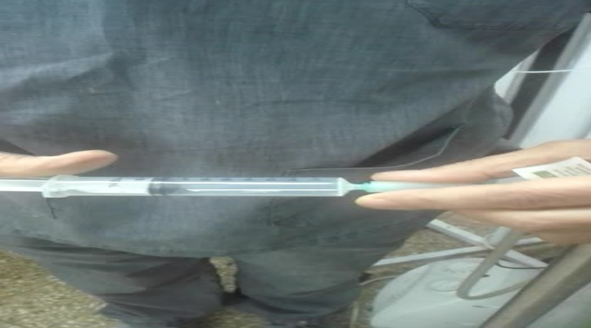
Dosis y concentraciones
Subcutánea
Intramuscular
Intrarectal
Intravaginal
Bagging
AH Menor
Sueros
Dextrosa 5%
Solución
Fisiológicas
Local
Agua,
aceites,
cremas
Vías de administración
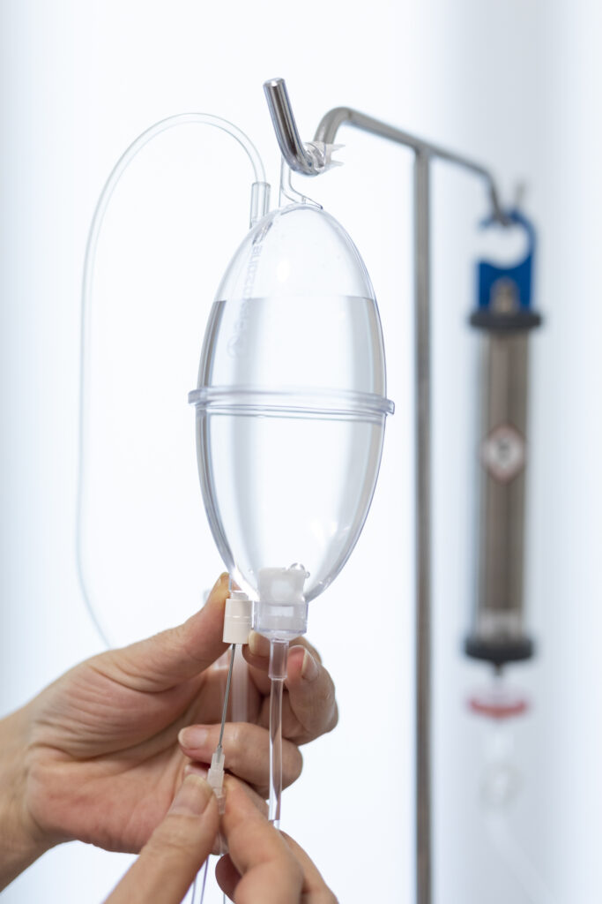

Vías tópicas
Embolsado con ozono — técnica de aplicación tópica regional.
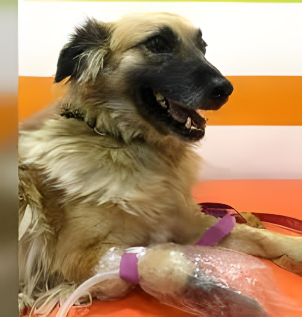
Preparación
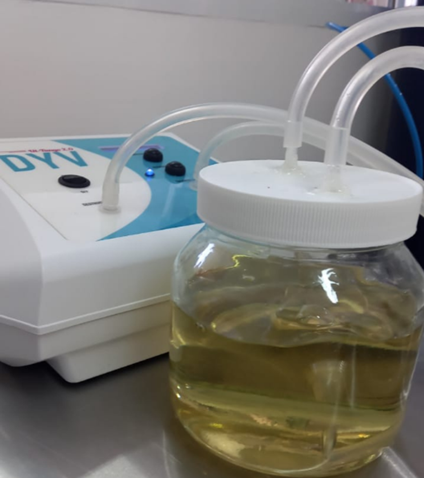
Vía sistémica
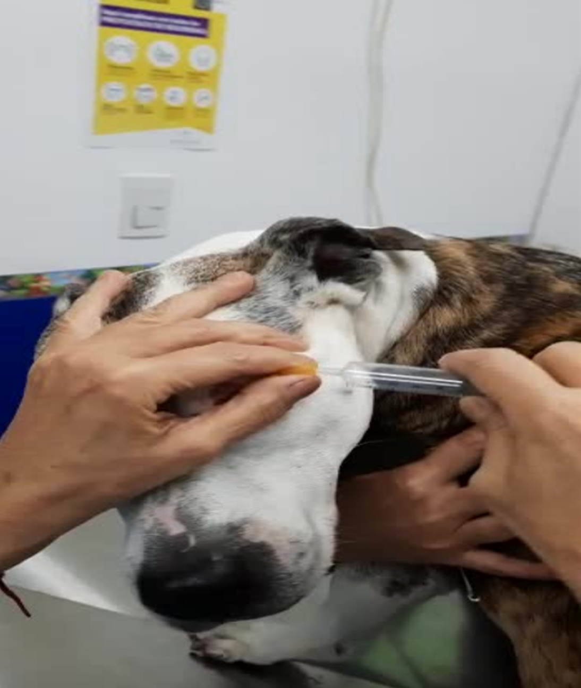
Insuflación
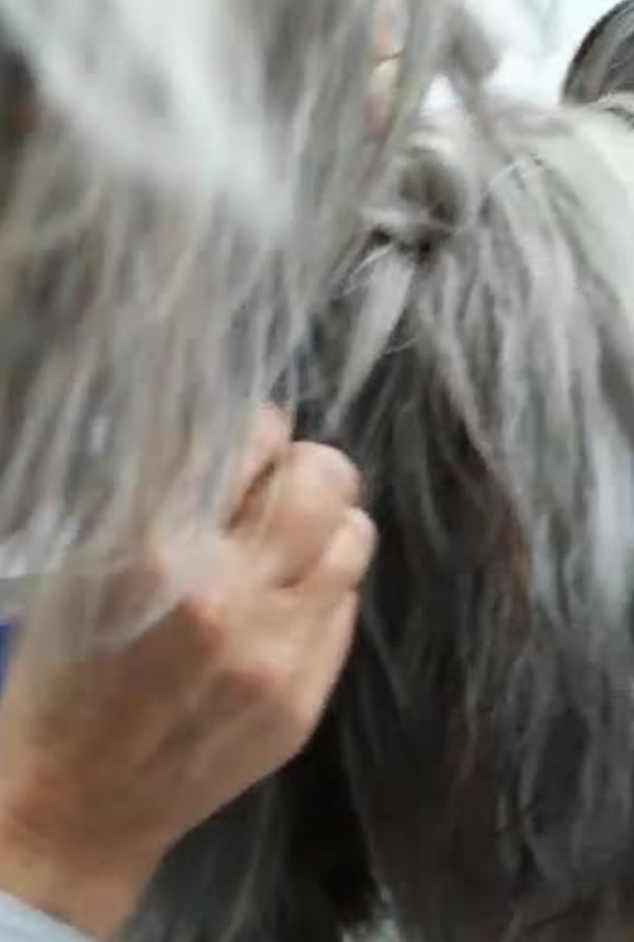
Aplicación local
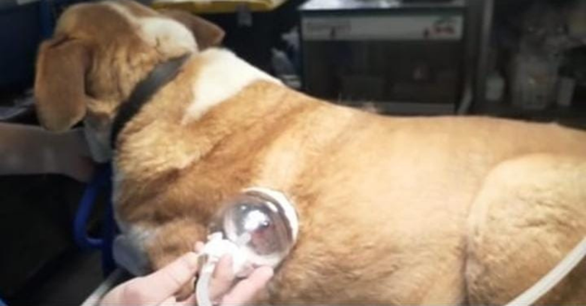
Tópica
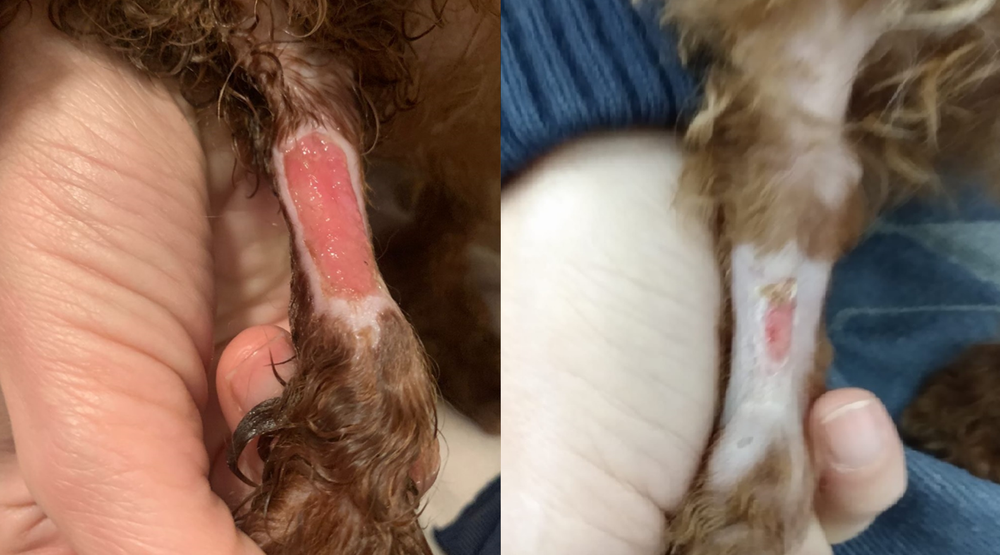
Tópica
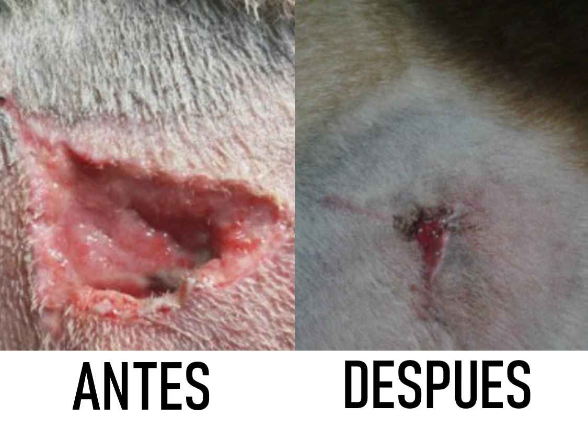
Vías de administración
Patologías
Estomatitis: infecciosas: virales-bacterianas-fungicas.
Esofagitis por reflujo.
Gastritis: Aguda – Crónica
Agua O3 - Aceites O3 - Sueros O3 · Ahmenor · Frecuencia - dosis.
Enteritis: agudas- crónicas, autoinmunes, infecciosas, parasitarias
Sueros O3 - insuflación rectal - agua ozonizada · Ahmenor. Frecuencia - dosis.
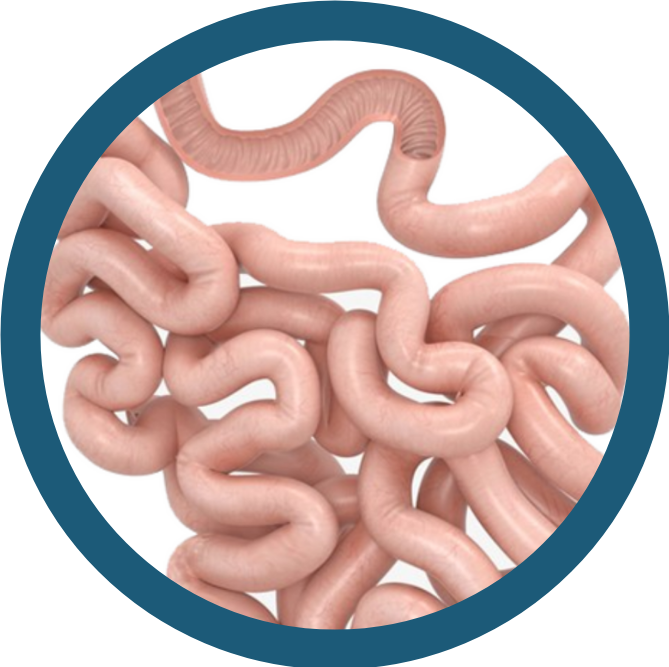
Patologías
Lupus - Pénfigo - Digestivas - Hematológicas - Oculares
Ozono endovenoso: suero glucosado
Ozono local: subcutáneo
Intrarectal
Autohemoterapia menor
frecuencia según el caso y combinación.
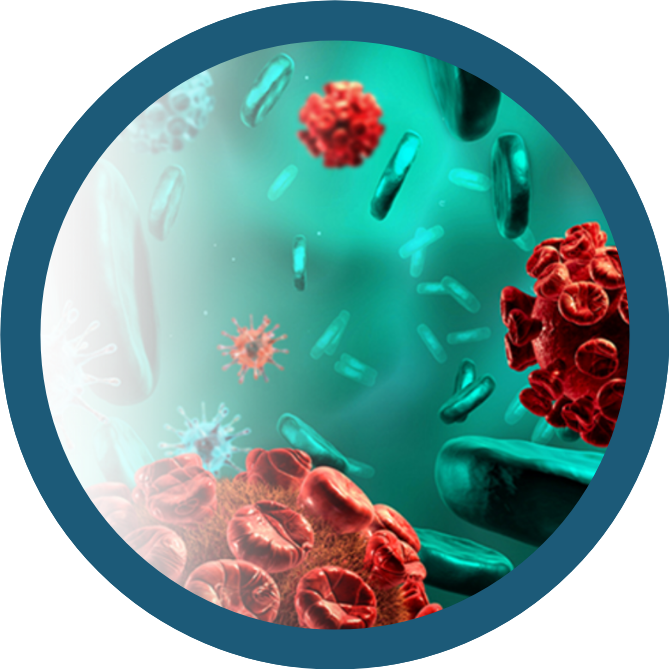
Patologías
Ozono endovenoso: suero glucosado AHM
En caso de tratamiento protocolar quimioterápico reduce ampliamente efectos colaterales (x ej. inmunosupresión) mejora sustancialmente estado general.
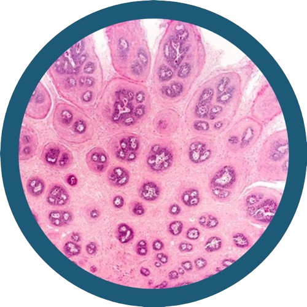
Patologías
Gingivitis infecciosa, úlceras
Ozono local: aceites ozonizados
Agua ozonizada
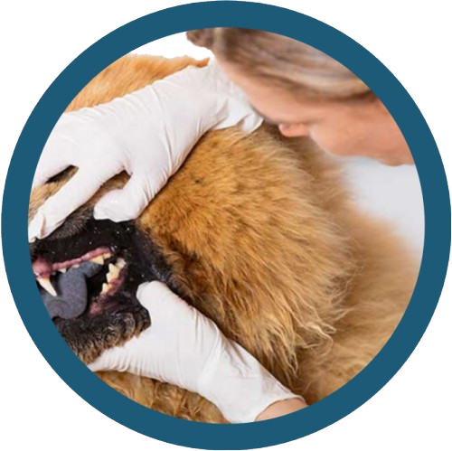
Patologías
Infecciosas, inflamatorias
Ozono local: ozono local con copa u otoscopio
gotas ozonizadas - frecuencia y tiempo de tratamiento según curso de la patología
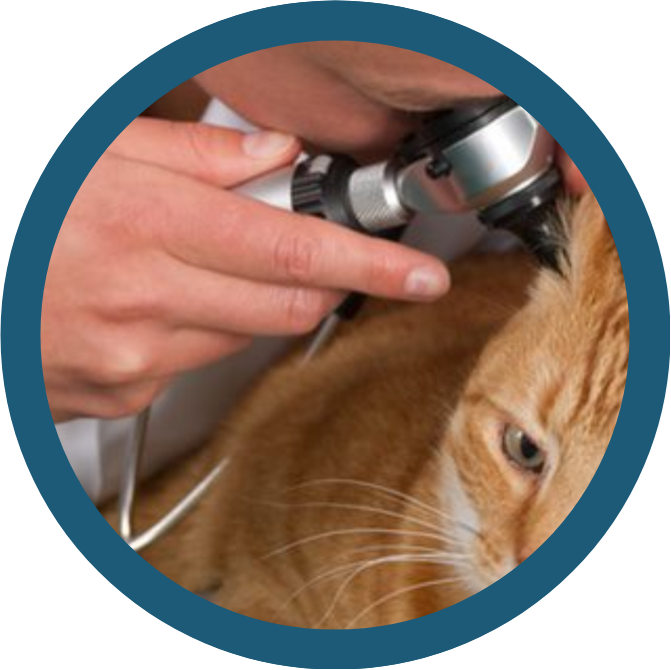
Patologías
Anemias - Autoinmunes - infecciosas
Ozono endovenoso: suero glucosado según patología su frecuencia y tratamiento protocolar.
Autohemoterapia menor
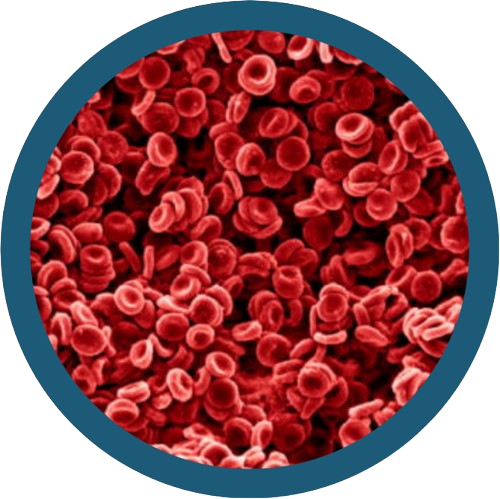
Patologías
Síndrome cerebeloso, ACV, hidrocefalia, desmielinización, arteroesclerosis senil
Suero glucosado endovenoso · Intrarectal.
Rápida evolución síndrome cerebeloso déficit irrigativo.
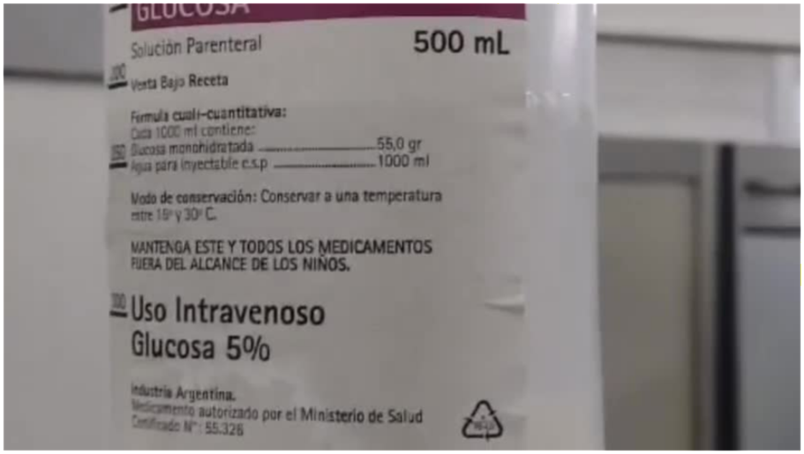
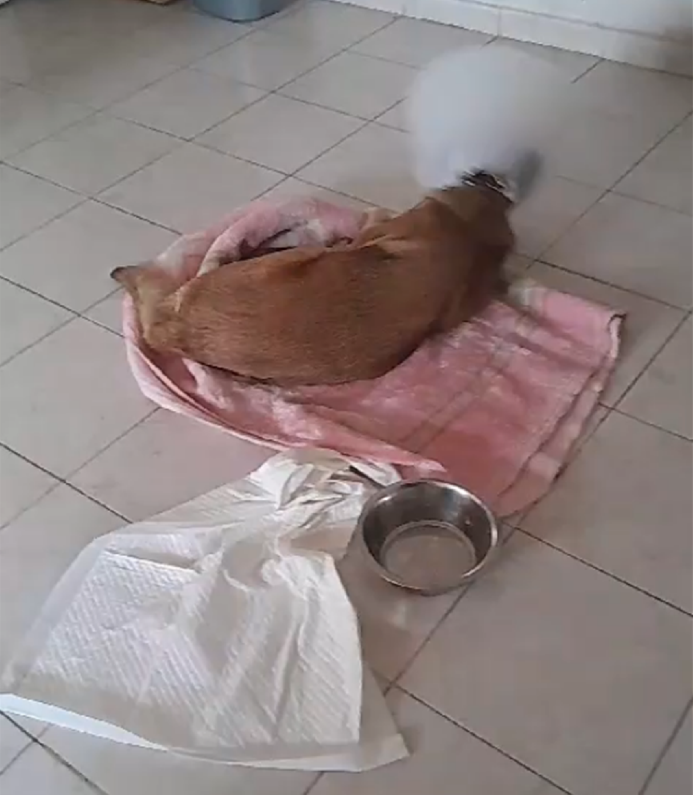
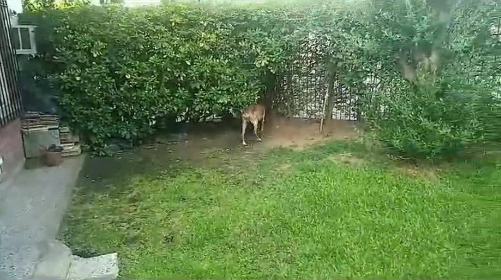
Patologías
Bacterianas - Virales - Fúngicas
Locales en lesiones - Subcutánea, insuflación en bolsa - autohemoterapia menor.
En casos graves como septicemias: tratamiento con ozono endovenoso (suero) con excelentes resultados (en horas) junto con el tratamiento protocolar de antibioticoterapia.
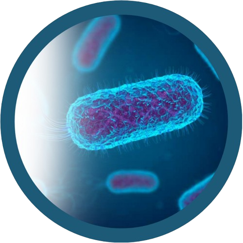
Patologías
Blefaritis infecciosas - inflamatorias
Ozono subcutáneo
Úlceras corneales
PRP ozonizado - instilación local
Glaucoma ángulo abierto
Ozono endovenoso: suero glucosado
Conjuntivitis virales - infecciosas bacterianas
Agua destilada ozonizada, instilación local
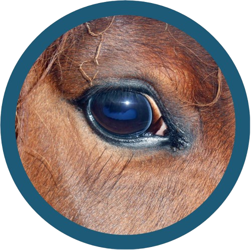